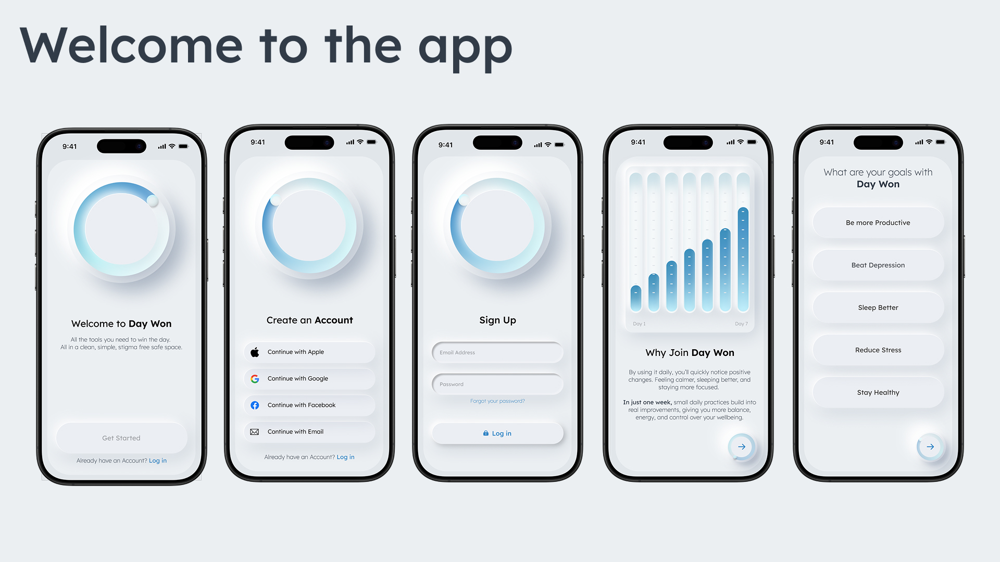
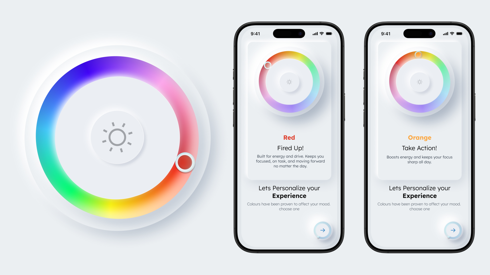
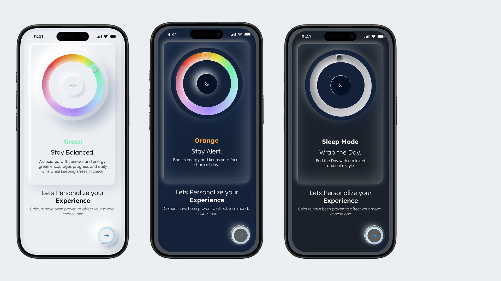
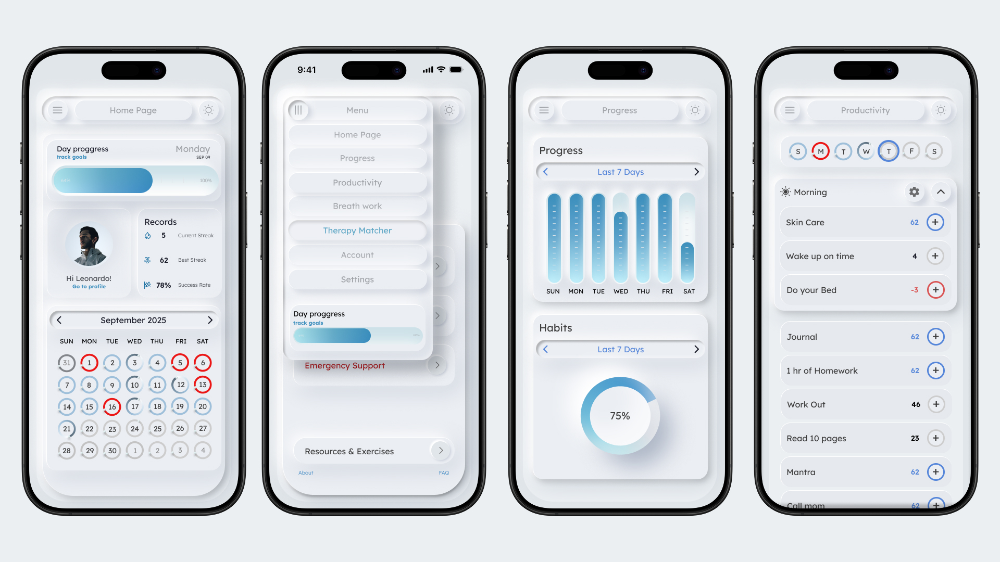
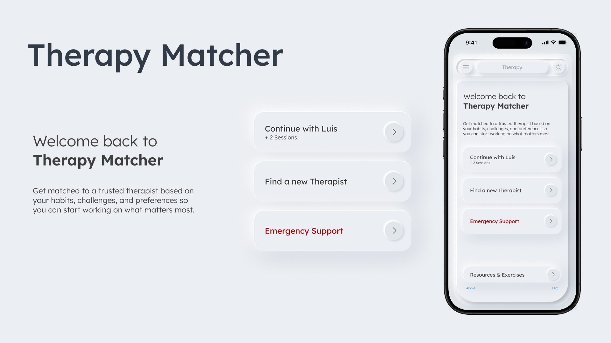
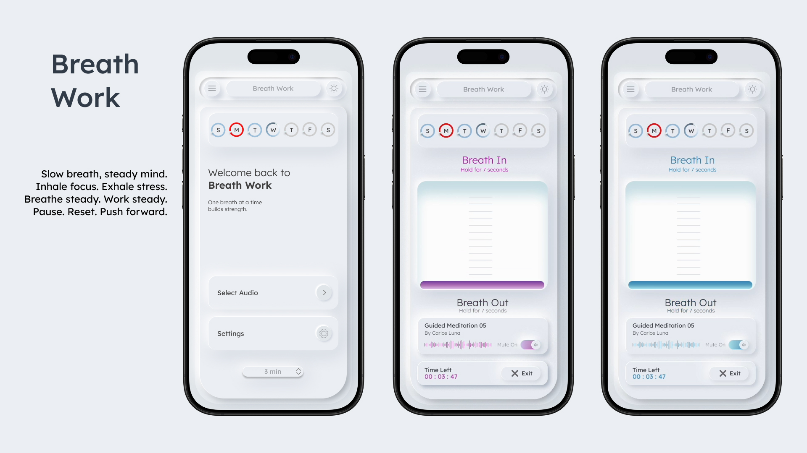
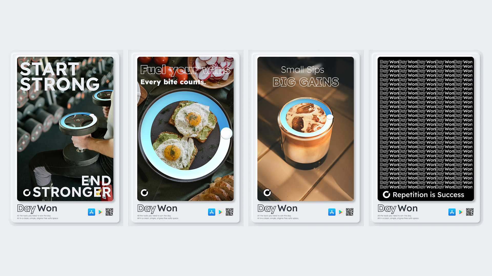
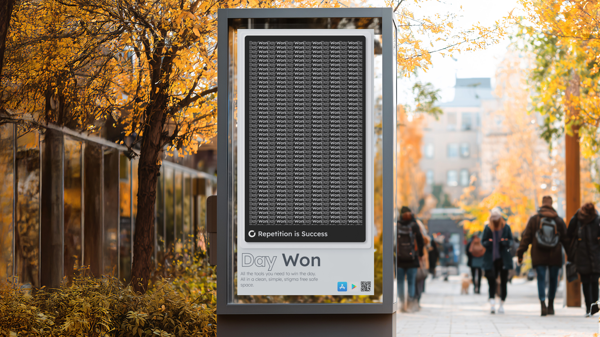
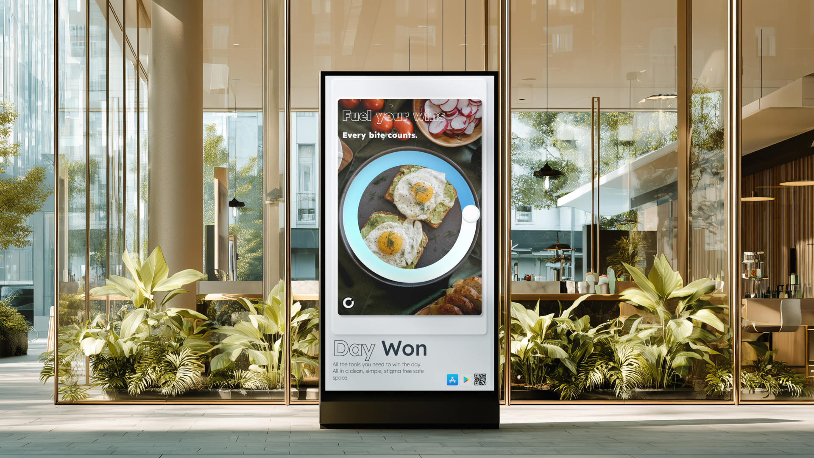

A brand for the days that get away from you
The challenge was to design something people could use when their day already felt full. I started with a simple question: if someone opened Day Won between classes or after a long shift, what would feel manageable in that moment? That question shaped both the tone of the brand and the tools I gave space to on the home screen.
I chose blue as the starting colour because I wanted the identity to feel calm and dependable. The circular mark, soft shadows and raised surfaces carry through into the app. Neumorphism gave the controls a gentle sense of depth, while the restrained palette leaves room for a single accent to draw the eye.

The first few screens
Onboarding introduces the app in a short sequence. Each screen gives one idea room to breathe. The circular graphic from the brand guide becomes a familiar reference as someone moves from the welcome screen toward their first check-in.

A colour that feels like yours
Blue establishes the brand, but someone using Day Won every day can choose their own accent colour. I designed a colour wheel for that choice and kept the layout consistent as the accent changes. The light and dark studies show how the same preference can carry across different backgrounds.


What the home screen brings together
The dashboard gives mood, goals and recent activity a shared home. A quick check-in makes sense on a busy day. The calendar and charts offer a longer view when someone wants to look back over the week. I used the same accent colour across those views so that a date, a selected control and a point of progress feel related.

Therapy Matcher
Looking for a therapist can begin with a surprisingly difficult question: what am I looking for? In this concept, the matcher starts with the person’s needs and preferences. Their answers give the app a starting point for suggesting therapists and give the person a way to put into words what kind of support they want.

Breath Work
Breath Work serves a different moment. Someone can open it, choose a session and follow a guided breathing exercise. Adjustable sessions and audio guidance give them control over the experience. The progress view makes it possible to return later and see when they’ve made time for a session.

Taking Day Won into the street
On a phone, a person has already chosen to open the app. A poster has to earn a glance from someone on their way somewhere else. I kept the campaign headlines short and used everyday imagery, including a cup of coffee, to connect the idea of a daily win to a moment people already recognise.
The street-sign mockups let me compare two kinds of encounter: a poster seen in passing along a path, and one seen outside a building where someone might stop. In both, the headline carries the first read and the Day Won identity signs off below.


